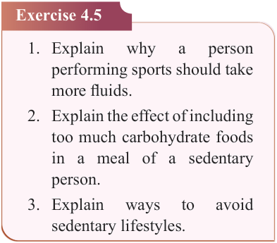
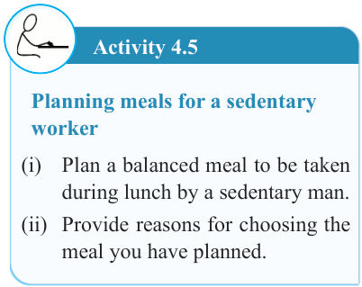

100


Food and Human Nutrition

Form Two


Activity 4.5
Planning meals for a sedentary worker
(i) Plan a balanced meal to be taken during lunch by a sedentary man.
(ii) Provide reasons for choosing the meal you have planned.
Exercise 4.5
1. Explain
why
a
person
performing sports should take more fluids.
2. Explain the effect of including too much carbohydrate foods in a meal of a sedentary person.
3. Explain
ways
to
avoid
sedentary lifestyles.
Meals for a pregnant woman
Meals for a pregnant woman should be planned carefully to meet the nutritional demands of both the mother and the growing foetus. The following are important considerations when planning meals for an expectant mother.
(i) The meal should be balanced with adequate nutrients to nourish the mother and foetus. It should contain more protein for the proper growth and development of the foetus. It should also contain vitamins, especially B vitamins.
For instance, folate (vitamin B9) reduces the risk of birth defects such as neural- tube defects. The meal should also include more minerals such as calcium and phosphorus, which support the formation and strengthening of the teeth and bones of the foetus.
Moreover, it should include iron- rich foods to support the formation of haemoglobin in the foetus and prevent iron deficiency in the mother. Furthermore, the meals should also contain more energy foods to meet the increased energy demand for the mother during pregnancy and delivery.
(ii) Seasoned and fried foods as well as strong tea should be avoided since these can cause excessive heartburn. In addition, excess intake of beverages containing caffeine, such as tea and coffee should be avoided as they limit absorption of nutrients such as dietary iron and can cause adverse effects on foetal growth. Likewise, alcohol
beverages
should
be
avoided because they pass through the placenta and enter the foetus’ blood. Prolonged exposure of the foetus to alcohol may result in birth defects, miscarriage and still birth.
(iii) The meal should contain enough roughage and fluids to facilitate digestion and reduce the risk of constipation.

17/09/2025 16:30